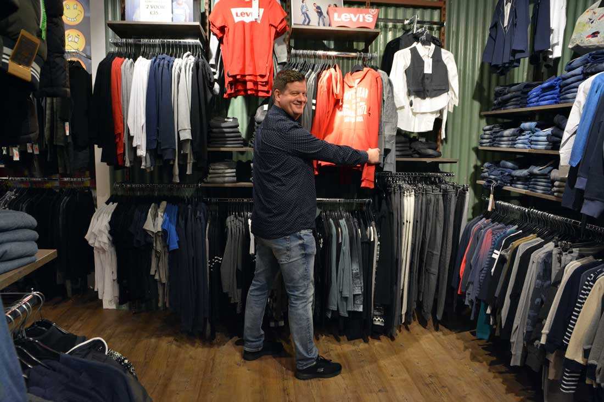

Negen winkels in de regio — reserveer online en pas in de winkel, of loop gewoon binnen voor persoonlijk advies.
Actuele openingstijden vind je op hennysrits.nl/vestigingen of bel de winkel.
Van Boetzelaerstraat 8
2406 BG Alphen aan den Rijn
0172-492451 · fil1@hennysrits.nl
Badstraat 1
2225 BL Katwijk aan Zee
071-4075583 · fil2@hennysrits.nl
Jan Vossensteeg 54-60
2312 WD Leiden
071-5132485 · fil7@hennysrits.nl
Winkelhof 22
2353 TS Leiderdorp
071-5894288 · fil5@hennysrits.nl
Kanaalstraat 45
2161 JB Lisse
0252-412170 · fil3@hennysrits.nl
Symfonie 3
2151 MC Nieuw-Vennep
0252-347077 · fil10@hennysrits.nl
Oegstgeesterweg 34
2231 AZ Rijnsburg
071-4081272 · fil4@hennysrits.nl
Centrumoever 13-15
2371 JC Roelofarendsveen
071-3319383 · fil6@hennysrits.nl
Langstraat 113
2242 KL Wassenaar
070-5115905 · fil9@hennysrits.nl
In 1977 opende Henny Wiggers zijn eerste winkel in Leiden. Wat begon met de verkoop van jeans groeide uit tot een echte modewinkel voor dames, heren en kids — met negen vestigingen in de regio.
Sinds 2002 zet zoon Jeroen de zaak voort, met dezelfde overtuiging: een jeans koop je niet op de foto, maar aan je lijf — met eerlijk advies van mensen die er verstand van hebben.